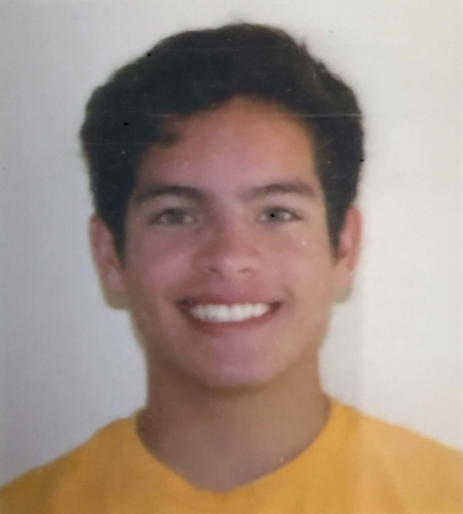
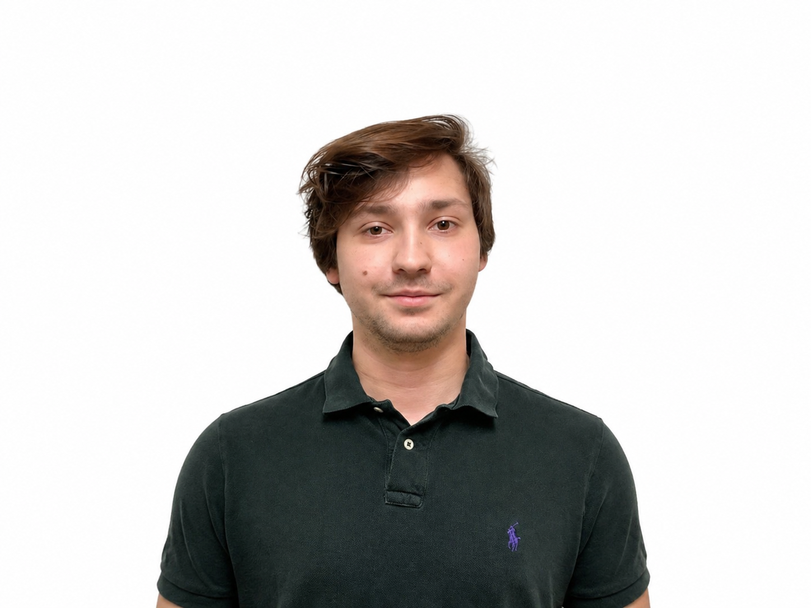

An embedded ballistic measurement system designed to measure projectile velocity and estimate trajectory using optical sensing, synchronized imaging, and real-time processing.
The Projectile Tracking Chronograph (PTC) is a senior design project focused on measuring projectile velocity and estimating trajectory using a combination of laser-based sensing, synchronized strobe illumination, embedded control, and image processing. Unlike traditional chronographs that only report velocity, PTC reports both the projectile's speed and its 3D trajectory, including launch angle and estimated range.
Group 05 is an interdisciplinary senior design team at the University of Central Florida, composed of students in Optical Engineering, Electrical Engineering, and Computer Engineering. The team designed and built a practical and affordable system that combines multiple engineering disciplines into a single ballistic measurement platform.
Software and UI Integration Lead (Computer Engineering). I wrote the software that connects the laser gate, strobes, cameras, microcontroller, and display into one automated measurement cycle.
The PTC authors are responsible for the research, design, implementation, and testing of the system's optical, electrical, computational, and user-interface subsystems.
Optical Engineering

Electrical Engineering
Optical Engineering

Computer Engineering
Initial project proposal and early system planning document.
Updated version containing revisions made after review.
Senior Design I midterm report covering research, design, and subsystem progress.
Revised midterm report with updates and corrections.
Final report documenting the complete Senior Design I work completed by Group 05.
Final report documenting the complete Senior Design 2 work completed by Group 05.
Conference paper documenting the Projectile Tracking Chronograph project.
Critical Design Review slides for the Projectile Tracking Chronograph project.
Final presentation slides for the Projectile Tracking Chronograph project.
Final demonstration of the complete Projectile Tracking Chronograph: laser-gate speed measurement, strobe imaging, and 3D trajectory output.
Midterm demonstration of the Projectile Tracking Chronograph.
Final presentation for the Projectile Tracking Chronograph project.
Critical Design Review presentation for the Projectile Tracking Chronograph project.